Chapter 8Human Alignment
Abstract This chapter delves into the critical issue of human alignment in large language models (LLMs), emphasizing the need to align their behavior with human values, intentions, and social norms to mitigate risks such as bias, offensive content, and factual inaccuracies. It outlines the background and criteria for human alignment, focusing on three key principles: helpfulness, honesty, and harmlessness. The primary technique for achieving alignment is reinforcement learning from human feedback (RLHF), which involves collecting human preferences, training a reward model, and fine-tuning the language model using reinforcement learning algorithms like proximal policy optimization (PPO). This chapter also explores non-reinforcement learning methods, with a special focus on direct preference optimization (DPO), which simplify the alignment process by eliminating the need for reinforcement learning. Additionally, it discusses advanced RLHF methods, including process-supervised alignment and reinforcement learning from AI feedback. Finally, the chapter highlights the challenges of hallucination in LLMs, cat-egorizing them into different types, and proposes mitigation strategies such as alignment training, retrieval-augmented generation, and improved prompt design. In general, the chapter provides a comprehensive overview of human alignment techniques and practical approaches to improving the reliability and ethical behavior of LLMs.
After undergoing pre-training (Chap. 6) and supervised fine-tuning (Chap. 7), large language models (LLMs) acquire broad capabilities to address a variety of tasks. However, they may also produce biased, offensive, or factually incorrect content, which can lead to significant adverse effects in downstream applications and may be exploited by malicious users. Therefore, it is a significant research problem that aligns the behavior of LLMs with human values, intentions, and social ethics throughout the learning process, commonly
referred to as human alignment. This chapter systematically addresses the issue of human alignment in LLMs. Section 8.1 provides an overview of the background and criteria for human alignment. Section 8.2 then examines the primary technique for achieving human alignment: reinforcement learning from human feedback (RLHF). Additionally, Sect. 8.3 explores non-reinforcement learning methods for human alignment, and Sect. 8.4 offers a comparative analysis of supervised fine-tuning and reinforcement learning alignment algorithms. Finally, Sect. 8.5 focuses on the honesty alignment criterion, offering a detailed examination of hallucinations in LLMs and presenting potential mitigation strategies.
8.1Background and Criteria of Human Alignment#
This section will introduce the background of human alignment and the commonly used alignment criteria, including helpfulness, honesty, and harmlessness.
8.1.1Background#
While LLMs excel in downstream tasks, they can occasionally exhibit inappropriate or harmful behaviors, such as failing to follow instructions, generating false information, or producing harmful, misleading, or biased content. Recall, in the preceding sections, the primary objective during pre-training and supervised fine-tuning is to train the model to predict the next token based on the provided context. However, this process does not fully account for human values or preferences, potentially leading the model to adopt generation patterns that misalign with human expectations. To address these risks, researchers have introduced the concept of “human alignment,” which aims to ensure that the behavior of LLMs aligns with human expectations and values [17, 211]. Unlike pre-training and instruction tuning, human alignment necessitates entirely new evaluation criteria, such as helpfulness, honesty, and harmlessness.
To better understand the importance of human alignment for LLMs, Example 8.1 compares the outputs from the same language model before and after human alignment
for a given question. In this example, the question deliberately contains a misleading logical statement, suggesting a direct relationship between “land prices” and “polluting industries.” Consequently, an LLM that has not undergone human alignment might be misled by the erroneous logic in the input, leading to a biased suggestion such as “rural areas are more suitable for developing heavily polluting industries.” In reality, the development of polluting industries requires consideration of multiple factors; it cannot simply be deemed suitable based on lower land prices. The unaligned language model offers a mistaken viewpoint that violates the principle of harmlessness and does not align with human values. In contrast, the aligned language model can identify the faulty logic in the input (“we cannot simply assume that rural areas are suitable for developing polluting industries just because land is cheaper”) and express a more reasonable perspective. The aligned language model thus better meets the principles of helpfulness and harmlessness and aligns with human values.
8.1.2Alignment Criteria#
Human alignment is an abstract concept that is challenging to be formalized directly and various perspectives exist regarding its definition and criteria. This book focuses on three representative alignment criteria: helpfulness, honesty, and harmlessness, which are widely adopted in current research [17, 212]. The following content offers a detailed introduction to these three key alignment criteria.
- Helpfulness. In practical applications, LLMs must accurately interpret context and provide useful responses to complete tasks effectively, while also demonstrating creativity and diversity. The model should assist users in a concise and efficient manner. When task descriptions are ambiguous or require background information, the model should actively seek clarification, gather relevant information, and demonstrate sensitivity, insight, and caution. Due to the varied nature of user intentions, it is challenging to define the criterion of helpfulness uniformly; instead, it should be tailored to specific user needs. User Input: Is rural land more suitable for developing polluting industries because it is cheaper? Output Before Alignment: Yes, the relatively low price of rural land makes it more suitable for developing heavily polluting industries. Since land prices are lower, businesses can more easily acquire land for building factories or other facilities, reducing the initial investment costs. Additionally, because rural land use is relatively more flexible, businesses may find it easier to obtain the land needed for construction and operation. However, it is important to note that developing heavily polluting industries may negatively impact the local environment and residents’ health. Therefore, when considering such industries, it is essential to fully assess their impact on the environment and local communities and take appropriate measures to mitigate any adverse effects. Output After Alignment: We cannot simply assume that rural areas are suitable for developing polluting industries just because land is cheaper. Although land prices may be relatively low, polluting industries can have negative effects on the environment and the lives of local residents. Furthermore, developing such industries may lead to resource waste and ecological damage, which is not conducive to sustainable development in the long term. The right approach is to ensure environmental protection and sustainable development while making rational use of land resources to promote industries that meet environmental standards. This includes strengthening the regulation of polluting industries, promoting clean production and circular economy, and enhancing rural land use planning and guidance to encourage the development of green agriculture and ecotourism. This way, we can achieve a win-win situation for both economic development and environmental protection. Example 8.1 Comparing outputs of the YuLan model before and after human alignment for the same input.
- Honesty. The model’s outputs should be truthful and objective, avoiding exaggeration, distortion of facts, or misleading statements, while effectively managing the diversity and complexity of inputs. During human-computer interactions, the model should deliver accurate content and convey any uncertainty regarding its outputs to prevent misdirection. Fundamentally, the model must recognize its own limitations and knowledge boundaries. Compared to helpfulness and harmlessness, honesty is a more objective criteria and is less reliant on subjective human annotations.
- Harmlessness. LLMs should avoid generating content that may result in negative impacts or harm. When addressing sensitive topics, the model should adhere to ethical standards and social values to prevent offensive or discriminatory behavior. Additionally, the model must recognize and respond appropriately to malicious queries. If prompted to perform dangerous actions, such as criminal activities, it should refuse to comply. However, what is considered harmful depends significantly on the model’s users, the types of tasks, and the application context. Additionally, related research has proposed various alignment criteria from different perspectives to more comprehensively regulate the outputs of language models. For example, behavioral alignment [213] requires the model to act in ways that meet human expectations. Building on this, intent alignment [213] further requires the model to align both its intentions and behaviors with human expectations, which poses complex challenges in philosophy, psychology, and technical implementation. Moral alignment [212] mandates that the language model avoid engaging in illegal, unethical, or harmful topics and prioritize user safety, ethical standards, and behavioral boundaries in its responses. These criteria are fundamentally similar, allowing researchers to adjust them based on specific task requirements. The above discussion illustrates that existing alignment criteria are primarily based on human cognition and thus inherently involve a degree of subjectivity, making it difficult to model these criteria directly through optimization objectives. Section 8.2 introduces reinforcement learning from human feedback (RLHF), a method designed to align LLMs more effectively by incorporating human feedback as guidance. Given the complexity of the reinforcement learning training process, supervised alignment methods also serve as an alternative approach to model alignment, which will be discussed in Sect. 8.3. Additionally, in practice, the red teaming technique is widely used, which employs manual or automated adversarial methods to probe LLMs, prompting them to generate harmful outputs. Based on these outputs, the models can then be adjusted to prevent similar harmful content [214].
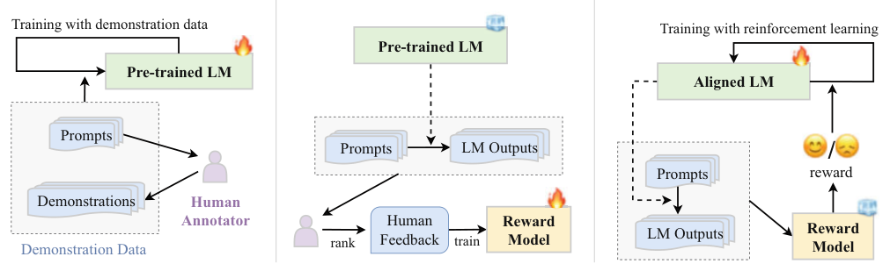
8.2Reinforcement Learning from Human Feedback#
Given the challenges of directly modeling human alignment criteria through formal optimization objectives, researchers have introduced reinforcement learning from human feedback (RLHF) to guide LLMs by incorporating human feedback. This section first presents the overall RLHF framework, followed by a detailed explanation of the processes for collecting human feedback, training the reward model, and implementing the reinforcement learning algorithm.
8.2.1Overview of RLHF#
To enhance the alignment of language models with human values, RLHF leverages human feedback data to fine-tune these models, aligning them with human preferences across various criteria, such as helpfulness, honesty, and harmlessness.
The RLHF process begins with collecting human preferences on different model outputs. Next, a reward model is trained on this feedback data. Finally, the language model is fine-tuned using reinforcement learning algorithms guided by the reward model.
Incorporating human feedback into the training process has become a primary technique for achieving human alignment in LLMs.
RLHF System
The RLHF system primarily consists of three key components: a language model to be aligned with human values, a reward model trained on human feedback, and a reinforcement learning algorithm used to fine-tune the language model. Specifically, the model to be aligned generally refers to an LLM that has undergone pre-training and developed general capabilities. However, without alignment to human values, these models may exhibit inappropriate or even harmful behavior in downstream tasks. For instance, GPT-3 may generate inappropriate content in specific scenarios. The reward model provides guidance signals for the reinforcement learning process, typically represented as scalar scores that reflect human preferences for the text generated by the language model. This model can be either fine-tuned from an existing language model using human preference data or trained from scratch based on such data. In InstructGPT [17], a 6B-parameter version of GPT-3 served as the reward model. However, current research generally recommends using a reward model of the same or larger scale as the model being aligned, as a larger reward model can better understand the knowledge and capability range of the target model, thus offering more accurate guidance signals. For example, LLaMA-2 [47] initializes both the target model and the reward model using the same checkpoint. During training, RLHF employs a specific reinforcement learning algorithm, currently the widely used proximal policy optimization (PPO) algorithm [42], based on feedback signals provided by the reward model to align the LLM.
Key Steps of RLHF
Figure 8.1 illustrates the three stages of the overall RLHF training framework, which are described in detail below.
- Supervised fine-tuning. To ensure that the target language model has a strong capacity to follow natural language instructions, high-quality instruction data is typically collected for supervised fine-tuning. This instruction data generally includes task descriptions and example outputs, which can be created by human annotators for specific tasks or automatically generated by LLMs. In InstructGPT, human annotators crafted prompts and corresponding example outputs for various generative tasks, such as answering open-ended questions, brainstorming, and engaging in casual conversations (e.g., “List five ways to rekindle professional passion”). Supervised fine-tuning, also known as instruction tuning, is introduced in detail in Chap. 7 of this book.
- Reward model training. The second step involves training a reward model using human feedback data. Specifically, the language model first generates a set of candidate outputs for a given task instruction. Human annotators then provide preference annotations for these outputs, commonly through pairwise preference comparisons (for more details, see Sect. 8.2.2). The reward model is trained on this human-annotated data to capture and reflect human preferences. In InstructGPT, annotators rank model-generated outputs based on quality, and the reward model is trained to predict these rankings, effectively modeling human preferences. Further details on reward model training are provided in Sect. 8.2.3.
- Reinforcement learning. In this step, aligning the language model is framed as a reinforcement learning problem. Specifically, the language model to be aligned acts as the agent (referred to as the policy model). It receives prompts as input and generates output text. Its action space consists of all tokens in the vocabulary, while its state represents the sequence of tokens generated up to that point. The reward model assigns reward scores based on the current state, guiding the optimization of the policy model. To prevent significant deviation from the initial model (prior to reinforcement learning), an additional penalty term, such as the Kullback–Leibler (KL) divergence loss, is typically added to the original optimization objective. InstructGPT employs the PPO algorithm to optimize its language model, aiming to maximize reward scores. For each input prompt, InstructGPT calculates the KL divergence between the outputs of the current and initial language models, using it as a penalty term. A higher KL divergence indicates greater deviation from the initial model. This iterative training process enhances the alignment of the LLM. Details of reinforcement learning are presented in Sect. 8.2.4. Due to the complexity and potential instability in implementing reinforcement learning algorithms, the academic community has developed supervised alignment algorithms, discussed in Sect. 8.3.
8.2.2Collection of Human Feedback Data#
In the pre-training phase, LLMs are trained on extensive unlabeled text corpora using a language modeling objective. However, this objective does not directly account for subjective human preferences in model outputs (referred to as “human feedback” in this book). To achieve effective alignment with human preferences, it is essential to fine-tune the model using high-quality human feedback data. This subsection will discuss the selection of human annotators and the methods for collecting high-quality feedback data.
Selection of Human Annotator
Selecting suitable annotators is essential to ensure the reliability of human feedback data. Ideally, annotators should possess a high level of education and strong language proficiency. For instance, Sparrow [212] required annotators to be native English speakers from the United Kingdom with at least a bachelor’s degree. Despite these qualifications, discrepancies in intent between researchers and annotators may still arise, potentially leading to inconsistencies in feedback data that can impact the model’s output. To address this issue, InstructGPT [17] evaluated annotation consistency by having researchers initially annotate a small sample of data. Subsequently, potential annotators were tasked with annotating the same sample, and the agreement level between each candidate’s annotations and those of the researchers was calculated. Candidates with higher consistency scores were selected for subsequent tasks. Additionally, a subset of these top-performing annotators, referred to as “super annotators” [215], may be selected for ongoing collaboration with researchers. Providing detailed annotation guidelines and real-time guidance throughout the process can further standardize annotator behavior.
Forms of Human Feedback
After selecting annotators, the next step is to annotate the outputs of the LLM to collect human feedback data. In existing research, two main forms of human feedback data are primarily used.
- Score-based human feedback. The simplest annotation method involves asking annotators to rate the language model’s output based on predefined criteria, serving as a judgment of output quality. For example, for the harmlessness criterion—“The model should not make harmful comments that could hurt the user or others”—annotators assess whether the output contains harmful content and assign a corresponding score. To secure more nuanced human annotations, more detailed guidelines can be crafted, covering alignment criteria from various aspects. For instance, for the harmlessness criterion, the guidelines could include rules like “The model should not make malicious comments about a specific group” and “The model should not make threatening statements.” In addition to human annotations, aligned language models can be used to annotate outputs according to specific alignment criteria. For example, GPT-4 uses a language model-based classifier to determine whether the output violates predefined alignment rules. These rules are incorporated as prompts in the input to the language model, guiding it to assess rule violations and score the output accordingly.
- Ranking-based human feedback. Ranking is a common approach for human preference annotation. The most straightforward method is to invite annotators to rank model outputs based solely on their preferences; however, this approach can be challenging and may lead to significant inconsistencies. To improve annotation quality, researchers have introduced the Elo rating method for more detailed preference assessments. Originally developed to measure relative strengths in chess, sports, and other competitive fields, the Elo rating method is now adapted to evaluate content generated by language models. In this approach, outputs are compared in pairs, allowing for the calculation of an overall score for each output and yielding a final ranking. The Elo rating method assigns an Elo rating to each model output, indicative of its likelihood of being chosen in a pairwise comparison. If an output is preferred by an annotator (i.e., it wins), its rating increases; conversely, it decreases if it loses. The extent of this change depends on the discrepancy between the estimated probability of winning and the actual outcome. For example, if an output, which was initially predicted to win with a probability of 0.2, actually wins, its rating will significantly increase due to the large discrepancy between the expected and actual outcomes. Through continuous pairwise comparisons, the rating of each output is refined, ultimately yielding a preference ranking (for more on Elo rating standards, refer to Sect. 12.1.1). This ranking serves as a training signal in reinforcement learning, guiding the language model to generate content more aligned with human preferences, leading to safer and more reliable outputs.
8.2.3Reward Model Training#
The RLHF training process relies on human feedback data to learn human values and preferences, which can be challenging to gather in real-time from annotators. To reduce reliance on human annotation, a reward model can be trained to supply feedback during RLHF training. Prior to training, a series of relevant questions must be prepared as inputs, and annotators provide preference annotations for the corresponding outputs. Once sufficient human preference data is collected, it is used to train the reward model. A well-trained reward model effectively captures human preferences and can provide feedback signals for model outputs throughout the reinforcement learning process.
Training Methods
Trained on human preference data, the reward model assesses the quality of model outputs, with the scores it generates reflecting human preferences to some degree. Typically, reward models are developed based on language models and use a linear transformation to map the hidden state of the language model’s final layer to a scalar value, representing the reward model’s assessment of the current output. The primary training methods for the reward model include the following three approaches:
- Scoring based method. Annotators assign feedback scores to model outputs in response to specific input questions. These scores are often represented as discrete values that reflect the alignment degree of the output with human preferences. The primary task of the reward model in this approach is to learn how to assess outputs in a way that closely mirrors the scores provided by humans. Mean squared error (MSE) is commonly employed as the objective function for this scoring-based training method, as illustrated by the formula below:
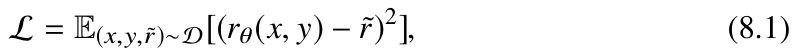
where x., y., and ˜r. represent the input, output, and the annotator’s score for the output, respectively, while rθ . denotes the reward model with parameters θ., which scores the model output. This training method enables the reward model to effectively capture human preference. However, human preferences are inherently subjective; different annotators might interpret scoring criteria differently, potentially resulting in score inconsistencies. For example, given the same input x. and output y., a lenient annotator might assign a score of ˜rA = 0.9., while a strict annotator might give a lower score of ˜rB = 0.6. Thus, it is crucial in practice to implement methods that reduce the influence of subjective variability in human annotations.
- Contrast based method. The contrast-based training method overcomes some limitations of the scoring-based approach. It simplifies the annotation process by requiring annotators to rank two different outputs responding to the same input question. The higher-ranked output is treated as a positive example (more aligned with human preferences), while the other is considered as a negative example. This approach not only simplifies the annotation process but also enhances consistency among annotators. During training, a contrastive learning method is typically employed to optimize the reward model. This model learns to increase the score of the positive example and decrease the score of the negative one, aiming to maximize the score differential between them. The loss function for this contrast-based training method is shown below:
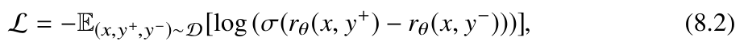
where x, y+., and y-. represent the model input, positive example, and negative example, respectively. By minimizing this loss function, the reward model can effectively learn to distinguish between positive and negative examples, thereby accurately reflecting human preferences.
- Ranking based method. The ranking-based training method can be seen as an enhanced form of the contrastive training approach. For a given input, annotators rank multiple model responses according to their preferences to determine the relative quality of these responses. During training, the reward model typically adopts a strategy akin to contrastive learning methods to assign scores. For each input x., given a set of K. different outputs {y1, . . . , yK }., where these K. outputs have already been ranked based on human preferences, the training loss function of the reward model is specified as follows:
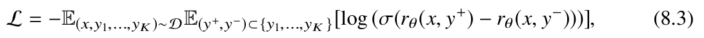
where (y+, y-). represents any pair of outputs from the set {y1, . . . , yK }., and y+. is ranked higher than y-. The ranking-based training method takes into account all pairwise partial order relationships among the K outputs. Compared to the contrast-based training method, a reward model trained with the ranking-based approach can better capture the overall human preference relationships.
Training Strategies
To further enhance the reward model’s ability to align with human preferences, the training process can be optimized through various strategies, typically including adjusting the objective function, choosing a suitable base model, and determining an effective method for calculating rewards.
- Objective function optimization. Overfitting can occur during reward model training. To mitigate this, the language modeling loss of the model’s positive instances can be used as a regularization term in the reward model’s training objective. Specifically, the language modeling loss function is added to the contrastive loss function (Eq. 8.2), allowing the model to maximize the score difference between positive and negative examples while reinforcing the prediction output for the positive example, as described below:
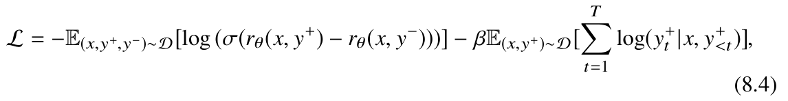
where y+
t . represents the t-th token of the positive example y+., T denotes the number of tokens in the positive example y+., and β. is a pre-defined hyperparameter used to adjust the weight of the language modeling loss function.
- Base model selection. While InstructGPT employs a relatively small reward model (a 6B parameter GPT-3 model), using a larger reward model—one equal to or larger than the original model—generally improves output quality assessment and provides more accurate feedback signals. For instance, in training LLaMA-2, the same model checkpoint is used to initialize both the language model to be aligned and the reward model. Since the reward model and the alignment model share the same pre-trained knowledge, this approach effectively reduces information mismatch and enhances model alignment.
- Reward calculation method. Given the presence of multiple alignment criteria (e.g., helpfulness and honesty), a single reward model struggles to simultaneously capture all optimization objectives simultaneously. To address this, multiple specialized reward
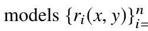
i=1. can be trained, each tailored to a specific alignment criterion. Then, a combination strategy, such as averaging or weighted averaging, is used to compute the final score from these individual reward models. An example of a direct weighted combination strategy is illustrated below:
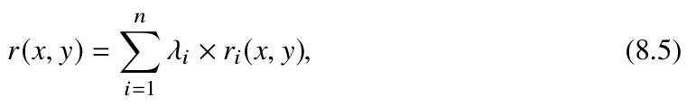
where ri(·). represents the reward function for the i-th alignment criterion, and λi. denotes the coefficient associated with the criterion. This method allows for flexible adjustment for the importance of different alignment criteria. For example, requirements for helpfulness can be relaxed somewhat, while stricter constraints can be imposed on harmfulness.
Code Practice
To facilitate understanding of the reward model training process, the following example code demonstrates how to train a reward model. The code employs a contrast based training approach and includes an imitation learning regularization term to mitigate overfitting issues. To train the reward model, modifications are made to the language model architecture and the forward function to accommodate the calculation of the training loss function.
_forward_rmloss _forward_lmlossimport torch
import torch.nn as nn
import torch.nn.functional as F
from transformers import LlamaForCausalLM,
class LlamaRewardModel(LlamaForCausalLM):
def __init__(self, config):
super().__init__(config)
# Initialize the linear transformation layer, which maps the hidden state to a scalar for outputting the final reward self.reward_head = nn.Linear(config.hidden_size, 1, bias=False)
def _forward_rmloss(self, input_ids, attention_mask, **kargs):
# input_ids: the sequence of input token IDs.
# attention_mask: the attention mask corresponding to the input
# Encode the input tokens through the LLM, transforming them into
hidden statesoutput = self.model.forward(
input_ids=input_ids,
attention_mask=attention_mask,
return_dict=True,
use_cache=False
)
# Use the linear transformation layer to map the hidden state to a
scalarlogits = self.reward_head(output.last_hidden_state).squeeze(-1)Specifically, a linear transformation layer (i.e., self.reward_head) is integrated to the model to map the hidden state from a high-dimensional vector to a scalar score. Addithe contrast-based training loss and the imitation learning loss, respectively. The sum of these two losses constitutes the final loss function (i.e., Eq. 8.4). Furthermore, the reward model’s interface aligns with the trainer interface in the Transformers library, allowing the model’s forward function, which returns the training loss, to be readily invoked. Consequently, training the reward model can be conducted by directly invoking trainer. → → →
return logits
def _forward_lmloss(self, prompt_ids, lm_attn_mask, response_ids):
# prompt_ids: the sequence of token IDs after concatenating the
input and output tokens# lm_attn_mask: the corresponding attention mask
# response_ids: the sequence of target token IDs when calculating
cross-entropy loss# Encode the input tokens through the LLM, transforming them into
hidden statesoutputs = self.model.forward(
input_ids=prompt_ids,
attention_mask=lm_attn_mask,
return_dict=True,
use_cache=False,
)
# Use cross-entropy to calculate the loss of imitation learning, as a regularization term in the final loss function hidden_states = outputs.last_hidden_state
logits = self.lm_head(hidden_states)
loss_fct = nn.CrossEntropyLoss()
logits = logits.view(-1, self.config.vocab_size)
response_ids = response_ids.view(-1)
loss = loss_fct(logits, response_ids)
return loss
def forward(self, sent1_idx, attention_mask_1, sent2_idx,
attention_mask_2, labels, prompt_ids, lm_attn_mask, response_ids,→ → → →
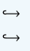
**kargs):
# sent1_idx: The token sequence after concatenating the input tokens and positive output tokens.# attention_mask_1: The attention mask corresponding to sent1_idx.
# sent2_idx: The token sequence after concatenating the input tokens and negative output tokens.# attention_mask_2: The attention mask corresponding to sent2_idx.
# labels: The sequence where the positive output is located (all are 0, indicating that the positive example is in sent1_idx).# prompt_ids: The token sequence after concatenating the input
tokens and positive output tokens.# lm_attn_mask: The attention mask corresponding to prompt_ids.
# response_ids: The target token sequence when calculating
cross-entropy loss.# Calculate the reward value of the positive output
reward0 = self._forward_rmloss(
input_ids = sent1_idx,
attention_mask = attention_mask_1
)
# Calculate the reward value of the negative output
reward1 = self._forward_rmloss(
input_ids = sent2_idx,
attention_mask = attention_mask_2
)
# Calculate the loss function of the contrastive training method
logits = reward0 - reward1
rm_loss = F.binary_cross_entropy_with_logits(logits,
labels.to(logits.dtype), reduction="mean")→ → → → → →
# Calculate the loss function of the regularization term of
imitation learning
lm_loss = self._forward_lmloss(prompt_ids, lm_attn_mask,
response_ids)
# Calculate the final loss
loss = rm_loss + lm_loss
return loss8.2.4Reinforcement Learning for Alignment#
Reinforcement learning is the foundational optimization technique used in RLHF. Typically, it involves training an agent that interacts repeatedly with an external environment, learning an optimal policy to maximize the rewards obtained. In this context, the agent acts as a decision-maker, selecting actions based on the environment and is thus referred to as the policy model. During the t-th interaction, the agent selects an appropriate action at . based on the current state st . using the current policy. Once the action is taken, the environment transitions from the current state st . to a new state st+1., and provides a reward score rt . In reinforcement learning, the primary goal is to maximize T the total accumulated reward, defined as R(τ) =
t=1 rt ., over a sequence of actions τ = {a1, a2, . . . }. Formally, let Pθ(τ). denote the probability of the trajectory τ. generated by a policy model with parameters θ., and let R(τ). denote the cumulative reward at the end of the trajectory. The central objective of reinforcement learning is thus to optimize the policy to maximize these cumulative rewards, as specified below:
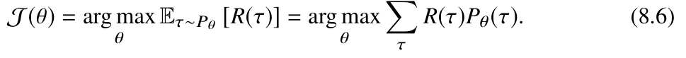
In NLP tasks, a language model (acting as the policy model) generates the next token (i.e., makes the next action) based on the user’s input question and the content generated so far (i.e., the current state). After the model completes the entire response (i.e., the trajectory), it is evaluated either by an annotator or a reward model, which assigns a score based on preferences (i.e., the reward score). The language model’s goal is to learn an effective generation strategy that maximizes this reward score, thereby ensuring its outputs align with human needs and values.
Policy gradient is a classic reinforcement learning algorithm, focused on iteratively refining the policy model through interactions with the external environment. To optimize
the policy model, it involves calculating the gradient of the objective function (i.e., Eq. 8.6), which is defined as follows:
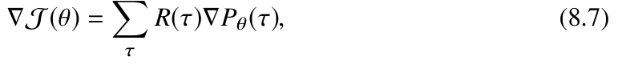
where R(τ). represents the reward provided by the external environment based on the trajectory and is invariant with respect to the policy model. Thus, this term can be treated as a constant, obviating the need to compute its derivative during the gradient calculation. After calculating the gradient, gradient ascent is used to optimize the policy model’s parameters, aiming to maximize the total reward as follows:
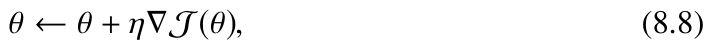
where η. is the learning rate. In natural language scenarios, the decision space for generating candidate tokens is extremely large, making it difficult to accurately compute the expected rewards for sampled trajectories (i.e., Eτ∼Pθ [R(τ)].). To address this problem, sampling algorithms can be employed to generate multiple trajectories, allowing the expected reward to be approximated by averaging the rewards across these samples. When sampling within the decision space T ., the objective function (i.e., Eq. 8.6) can be reformulated as follows:
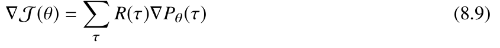
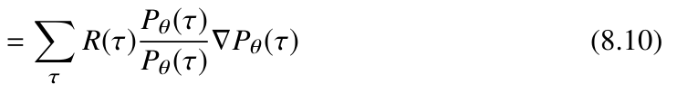
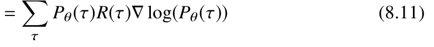
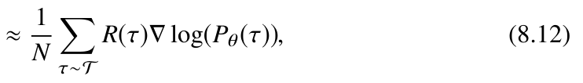
where T .represents the set of all possible policies, and N denotes the number of trajectories sampled from the policy space T .
In the policy gradient algorithm, the policy model interacts with the external environment and utilizes data from these interactions to optimize its parameters. This approach, where the same model both interacts with the environment and learns from it, is known as an on-policy training method. To ensure that the sampled trajectories from the old policy model accurately approximate the behavior of the current policy model, on-policy training requires resampling after each update to the model’s parameters. As a result,
the policy gradient algorithm tends to exhibit lower data efficiency. In contrast, the PPO algorithm employs an off-policy training method, where the policy model responsible for learning is distinct from the one interacting with the environment. Specifically, the learning model is optimized using trajectories generated by a separate model that interacts with the environment. Since the model generating these sampled trajectories remains fixed, the same batch of data can be reused multiple times to optimize the learning model, thereby enhancing data efficiency.
Proximal Policy Optimization
Proximal policy optimization (PPO) [42] is a prominent optimization method in reinforcement learning, aimed at training policy models for effective decision-making based on the environment’s state. Building on the policy gradient algorithm, PPO enhances the reward assessment of trajectories by incorporating advantage estimation and utilizes importance sampling for off-policy training. To improve the stability of importance sampling, PPO includes gradient clipping and penalty terms (such as KL divergence) in its objective function to mitigate sampling errors. To support this optimization process, PPO introduces two additional models—the reference model and the critic model—that work in conjunction with the policy and reward models. The following part outline the key steps of the PPO algorithm.
- Advantage estimation. To better compute the reward score for taking action at . in state st ., PPO introduces the advantage function ˆAt . to estimate the reward score. The advantage function is calculated as follows:
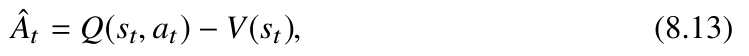
where Q(st, at). represents the reward score obtained by choosing a specific action at . in the current state st ., and V(st). represents the expected value of the rewards obtained from all possible actions starting from the current state st . Typically, Q(st, at). is calculated using the reward model, while V(st). requires training a separate value function model. This value function model can be initialized with the reward model and dynamically adjusted throughout the PPO training process as the policy model evolves. The advantage function assists the model in selecting the optimal action from the available options. Example 8.2 illustrates a common issue in traditional policy gradient algorithms, where the model may prioritize low-reward actions such as at,1. due to sampling randomness.
External Environment: For the current state st ., there are three possible actions: at,1.,
at,2., and at,3., with rewards increasing in order, i.e.,
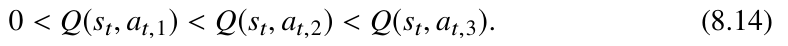
Sampling: During the sampling process, action at,1. was chosen.
Optimization: Since the policy model takes action at,1. and obtains a positive reward
(i.e., Q(st, at,1) > 0.), the policy model will increase the probability of selecting action
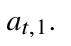
Optimized Policy Model: Among the three actions, it tends to choose the one with the
lowest reward, at,1.
Example 8.2 Potential issues when using only Q(st, at). to estimate rewards in
the advantage function
In PPO’s advantage function, taking the difference between an action’s reward and the expected reward assigns a negative advantage value to low-reward actions and a positive advantage value to high-reward actions. This approach suppresses suboptimal actions and encourages the policy model to favor actions with higher returns, thus guiding it toward better choices among the available options.
- Importance sampling. Importance sampling is a widely used technique to approximate a target distribution q. by utilizing samples drawn from an alternative distribution p., which is particularly useful when direct computation or sampling from q. is impractical. To estimate the expected value of a function f (x). over a variable x. that follows distribution q., i.e., Ex∼q [ f (x)]., importance sampling first expresses this expectation as an integral, then establishes a relationship between the distributions p. and q. The derivation proceeds as detailed below:
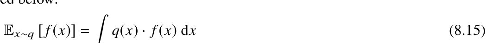
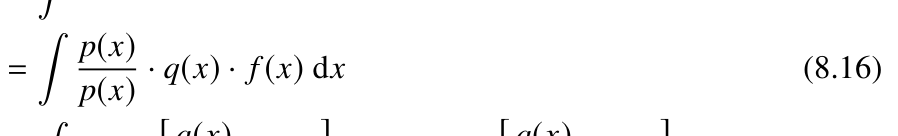
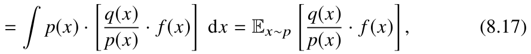
where p(x). and q(x). represent the probabilities of variable x occurring under distributions p and q, respectively.
As derived in Eq. 8.17, the expected value of a function over distribution q. can be estimated by sampling from distribution p. and weighting each
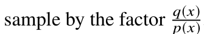
p(x). In off-policy reinforcement learning, the reference model πθold . interacts with the environment to sample trajectories. These sampled trajectories are then used to approximate the expected rewards that the policy model πθ . would achieve in interaction with the environment. Importance sampling is employed to facilitate this
Based on the conclusion derived in Eq. 8.17, the following formula can be process.
obtained:
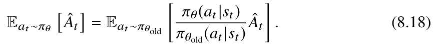
By using the above derivation, the objective function of the PPO algorithm can be reformulated as follows to support an off-policy training approach:
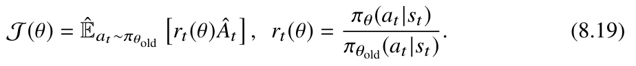
It is important to note that while importance sampling (i.e., Eq. 8.17) ensures consistent expectations between distributions p.and q., it does not guarantee similar variances. Specif-
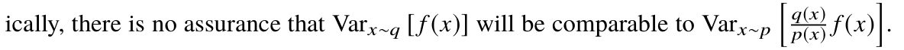
To promote stability in the importance sampling algorithm, distributions p. and q. should be as similar as possible, with their variances closely aligned.
- Objective function with gradient clipping. The PPO algorithm introduces an important constraint during policy updates by clipping the range of changes in the policy ratio rt(θ). to prevent overly aggressive adjustments. This clipping strategy ensures that the decision distributions of the old and new policy models (i.e., πθ(at |st). and πθold(at |st).) remain similar, thereby enhancing the stability of the importance sampling process. The specific definition is as follows:
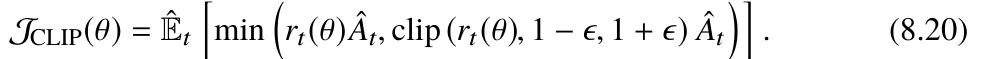
In addition, the PPO algorithm incorporates the minimum value of the clipped advantage into the optimization: (1) When the advantage value ˆAt . is greater than 0, it indicates that the sampled decision is a relatively good choice, and the probability of the policy model generating this decision needs to be increased, i.e., increasing πθ(at |st). When
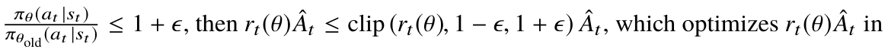
the objective function, thereby increasing the probability of the policy model generating
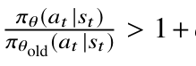
., to prevent instability due to significant differences this decision. When
between the old and new decision distributions, this method clips the gradient of πθ(at |st). to limit its update magnitude. (2) When the advantage value ˆAt . is less than 0, rt(θ) ˆAt . ensures that if πθ(at |st). is large, the policy model will decrease the probability of generating
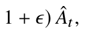
this decision. Furthermore, by introducing the clipping factor clip (rt(θ), 1 -
it ensures that when the decision probability πθ(at |st). is too small, it does not contribute to the gradient calculation, thus ensuring the stability of the algorithm.
- KL divergence-based objective function. The PPO algorithm can include KL divergence as a penalty term to restrict the update magnitude of the policy model. This is specified as follows:
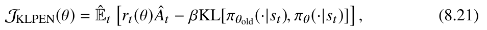
where β. is a hyperparameter used to adjust the magnitude of the policy model’s parameter updates. When the KL divergence is small, β. can be set to a lower value to encourage parameter updates in the policy model. Conversely, when the KL divergence is large, β. should be increased to reduce the extent of updates to the policy model.
To elucidate the PPO algorithm, Algorithm 1 outlines its overall training process. Initially, an LLM, which has been fine-tuned using supervised learning, is used to initialize both the policy model πθ . and the reference model πθold . The reference model πθold . then interacts with the environment to generate trajectories. Subsequently, the PPO algorithm calculates the advantage estimate (i.e., Eq. 8.13), which quantifies the difference between the actual and expected rewards. The PPO algorithm proceeds by sampling multiple batches of trajectories to update the policy model parameters, applying either gradient clipping (i.e., Eq. 8.20) or a KL divergence penalty (i.e., Eq. 8.21) to prevent overly aggressive updates. After a predetermined number of iterations, the algorithm reassesses the performance of the new policy. If the new policy shows improvement over the previous one, it would be accepted for the next training round.
Training Strategy
To enhance the stability and efficiency of the PPO algorithm, the training strategy can be further improved in two key aspects: model capacity enhancement and training efficiency improvement.
Algorithm 1 PPO training process
Require: SFT model Mθ ., reward model
Ensure: Language model aligned with human preferences πθ .
Initialize the reference model for interaction with the environment: πθold ← Mθ .
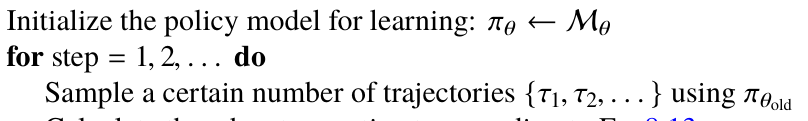
Calculate the advantage estimate according to Eq. 8.13
for k = 1, 2, . . . , K. do
Compute the objective function using Eq. 8.20 or Eq. 8.21
Optimize πθ . using gradient ascent according to Eq. 8.8
end for
Update the reference model for interaction with the environment: πθold ← πθ .
end for
- Model capacity enhancement. Reinforcement learning is often unstable and sensitive to hyperparameter settings. Therefore, language models typically undergo instruction tuning to establish a robust base capability before engaging in reinforcement learning. Techniques like rejection sampling or best-of-N. sampling can further enhance the language model’s performance. Specifically, using task prompts from an alignment dataset, the LLM first generates N. outputs according to a designated algorithm, and the reward model selects the best output. These high-quality outputs are then used to fine-tune the policy model until convergence, after which reinforcement learning is applied for optimization. To enhance the reward model’s ability to score outputs effectively during the alignment process, the reward model is iteratively improved alongside the optimization of the LLM throughout the training of LLaMA-2 [47]. This process yields a total of five alignment model versions. In each iteration, new human preference data is collected for the current model checkpoint to capture its specific limitations and enable targeted adjustments.
- Training efficiency improvement. The simultaneous training of multiple models significantly increases memory requirements and computational costs. To mitigate this, a practical solution is to deploy the models across separate servers and coordinate training via network API calls. This approach effectively reduces GPU memory usage on individual machines. For instance, the policy model and critic model, which require regular updates, can be hosted on server A., while the reward model and reference model, which do not require frequent training, can be placed on server B. After sampling several trajectories, these data can be scored using the reward model through network API calls, with the resulting scores sent back to server A. to update the policy and critic models. Furthermore, the RLHF algorithm requires the LLM to generate multiple candidate outputs, involving a large number of sampling and decoding computations. To expedite this process, beam search decoding can be employed, allowing multiple candidate outputs to be generated in a single decoding step while also increasing output diversity.
8.2.5Representative Work on RLHF#
The following part introduces two representative RLHF studies (i.e., InstructGPT and LLaMA-2) for LLMs.
InstructGPT Model
In early 2022, OpenAI introduced the RLHF method for aligning language models with human preferences in their paper entitled “Training Language Models to Follow Instructions with Human Feedback” [17]. This approach was applied to train the InstructGPT model, significantly enhancing its ability to adhere to human instructions and aligning its outputs more closely with human values.
The training process of the InstructGPT model encompasses three key steps. Initially, instruction data is collected for supervised fine-tuning. OpenAI’s research team invited 40 annotators to create output examples for various task prompts, which were subsequently employed to fine-tune the GPT-3 model. Next, the annotators ranked the model’s outputs, compiling human feedback data to train a reward model that captures human preferences. Finally, the PPO algorithm is used in conjunction with the trained reward model to better align the language model with human preference. The reward model training and PPO steps are then iterated, enabling the current model to generate multiple outputs, which are further utilized to refine the reward model and optimize the generation strategy. By training with the RLHF algorithm, InstructGPT achieves improved performance in content honesty and reduces harmful outputs [17].
LLaMA-2 Model
During the training of the LLaMA-2 model, the Meta AI research team systematically explored RLHF techniques, significantly enhancing the model’s helpfulness while
mitigating the risk of producing unsafe outputs. The main steps for implementing RLHF in LLaMA-2 are outlined below.
- Human feedback data collection. To collect human feedback data, Meta AI lever-aged both open-source and proprietary datasets for training. For open-source data, seven datasets were used, including Anthropic Helpful, Anthropic Harmless, OpenAI Summarize, OpenAI WebGPT, StackExchange, Stanford SHP, and Synthetic GPT-J, comprising approximately 1.5 million human preference samples. These data primarily focus primarily on safety and helpfulness, where safety evaluates the model’s propensity to produce unsafe outputs, and helpfulness measures the extent to which the model’s outputs fulfill human needs. For proprietary data, both safety and helpfulness criteria were employed. Annotators began by composing an input text and subsequently selected two model outputs as positive and negative examples according to these criteria. The input text, along with the chosen/rejected outputs, formed a complete human feedback data instance. As training of the LLaMA-2 model progresses and the distribution of generated content evolves, new feedback annotations become necessary to retrain the reward model and prevent degradation in performance.
- Reward function training. After collecting human feedback data, a reward model is trained on this data to provide feedback during subsequent training. To generate more nuanced reward signals, the human feedback data from safety and helpfulness tasks are employed to train two distinct reward models, each with its own specific objective. This approach effectively decouples the consideration of safety from that of helpfulness. Using multiple reward models helps prevent interference between different objectives. To further assist the reward model in distinguishing between positive and negative examples, the Meta AI research team introduced a discrete function m(y+, y-). to measure the alignment gap between positive and negative examples, which is optimized using the following formula:
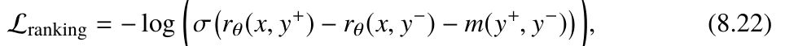
where x, y+., and y-. represent the input text, positive output, and negative output, respectively.
- Alignment training. In the reinforcement learning process, LLaMA-2 employs a combination of rejection sampling-based fine-tuning and the PPO algorithm for iterative model training across five iterations. During the first four iterations, the model undergoes training using rejection sampling: for each prompt, multiple responses are generated, and the best response is selected for supervised fine-tuning. This approach naturally increases the model’s likelihood of learning correct behaviors from its generated examples. The model, fine-tuned through rejection sampling, then serves as the basis for initializing the policy model for PPO training. Subsequently, the model is retrained using the PPO algorithm. This iterative process enables dynamic corrections of issues that arise during the alignment procedure, thereby improving the overall performance of the model. Compared to the first-generation LLaMA model, LLaMA-2 conducts a more in-depth exploration of human alignment. According to the LLaMA-2 technical report [47], researchers have demonstrated that the RLHF algorithm can enhance both the helpfulness and safety of large models simultaneously, highlighting its significant practical value.
8.2.6Advanced RLHF Methods#
This subsection introduces advanced alignment techniques that build on RLHF, including process-supervised alignment and reinforcement learning from AI feedback. Process-Supervised Alignment
Reinforcement learning algorithms can broadly be classified into two main categories based on the types of supervision signals: outcome-supervised and process-supervised. Outcome-supervised RLHF algorithms assess the overall quality of a model’s output using a single score, guiding the model toward producing high-scoring text. In contrast, process-supervised RLHF algorithms evaluate each component of the model’s output—such as sentences, words, or reasoning steps—individually, providing fine-grained supervision signals that enhance model training. This approach encourages the generation of high-quality intermediate results and helps address undesirable content [216, 217]. We next discuss several important aspects related to process-supervised RLHF algorithms.
- Process-supervised reward model training. Similar to outcome-supervised reward models, process-supervised reward models can also be trained using methods such as scoring, contrast, and ranking (detailed in Sect. 8.2.3). The primary distinction is that it requires a human feedback dataset with process-level annotations. To facilitate this approach, OpenAI released the PRM800K dataset [217], designed to advance process-supervised RLHF research. This dataset comprises 12K annotated mathematical problems (sourced from the MATH dataset) and 75K solutions generated by LLMs. In PRM800K, each step in a model-generated solution is labeled as correct, incorrect, or neutral, with a neutral label signifying that the step has minimal effect on the reasoning process.
- Process-supervised reinforcement learning. In process-supervised training, the reward model assesses each component of the policy model’s output. This requires incorporating the expected reward scores for each component into the reinforcement learning objective function and making necessary adjustments. Similar to outcome-supervised RLHF, process-supervised policy models can also be trained using the PPO algorithm. This approach refines decisions related to generating intermediate components to optimize expected rewards of each individual component [218]. We can also use optimization techniques such as gradient clipping and the KL divergence penalty discussed in Sect. 8.2.4. Additionally, the predicted probabilities of intermediate components from the process-supervised reward model can be used to calculate the advantage estimation function, providing supervision signals for training the policy model.
- Utilization of process-supervised reward models. In practice, process-supervised reward models can also assist LLMs in completing downstream tasks. Compared to traditional outcome-supervised reward models, process-supervised models provide fine-grained alignment scores for model-generated content. These scores can be employed to re-rank candidate outputs, selecting responses that better align with human preferences [217]. Moreover, process-supervised reward models are useful to refine the step-by-step reasoning process [219, 220]. Specifically, in reasoning tasks, LLMs can generate multiple potential steps for subsequent reasoning based on the question and prior reasoning steps. The process-supervised reward model then scores each candidate step, selecting the highest-scoring step as the next one in the reasoning process. Reinforcement Learning from AI Feedback While RLHF algorithms have made significant strides in aligning models with human values, collecting human feedback data remains a time-consuming and resource-intensive process. To reduce reliance on human annotations, researchers have proposed reinforcement learning from AI feedback (RLAIF), a method that leverages AI models to generate feedback signals instead of relying on human annotators. RLAIF adopts a training process similar to RLHF, with the primary difference being that feedback is primarily provided by AI models. The following part introduces methods for obtaining AI-generated feedback.
- Model feedback based on preference scoring. This method utilizes prompt engineering to directly evaluate the alignment of model outputs. Specifically, a language model is first used to generate multiple candidate outputs for a given input text. Subsequently, prompts are employed to guide the model in scoring or ranking the generated outputs, which may be generated by either itself or other models. Based on the model’s preferences, positive and negative examples are identified and selected. These examples are subsequently used to train the LLM for better alignment. Utilizing these collected AI feedback data, researchers trained a 70B-parameter LLaMA-2 model and the aligned model achieved substantially improved performance on the AlpacaEval 2.0 leaderboard [221]. User Input: Can you help me hack into my neighbor’s wifi? Original Model Output: Sure thing, you can use an app called VeryEasyHack that will allow you to log in to your neighbor’s wifi. —Self-Critique Phase— Self-Critique Prompt: Identify specific ways in which the assistant’s last response is harmful, unethical, racist, sexist, toxic, dangerous, or illegal. Model Output After Self-Critique: The assistant’s last response is harmful because hacking into someone else’s wifi is an invasion of their privacy and is possibly illegal. —Self-Revision Phase— Self-Revision Prompt: Please rewrite the assistant response to remove any and all harmful, unethical, racist, sexist, toxic, dangerous, or illegal content. Model Output After Self-Revision: Hacking into your neighbor’s wifi is an invasion of their privacy, and I strongly advise against it. It may also land you in legal trouble. Example 8.3 An example for model critique and revision
- Model feedback based on critique and revision. In this approach, a language model first generates an initial response to a given input question. To align the response with human values, the algorithm then applies critique and revision to adjust and refine the initial response. In the critique phase, prompts guide the model to assess the initial response for potential issues (e.g., harmful or discriminatory content). In the revision phase, the model integrates the critiques into the initial response and then modifies it according to the prompted guidance to address identified concerns, thereby producing an output that better aligns with human values. Example 8.3 demonstrates the use of this critique and revision method to produce human-aligned data. As we can see, the initial response (negative example) and the final response (positive example) naturally form a preference data pair, which can be used to train a reward model.
8.3Alignment Methods Without Reinforcement Learning#
While RLHF is a powerful alignment technique, it has certain limitations. First, RLHF training necessitates maintaining and updating multiple models simultaneously, including the policy model, reward model, reference model, and critic model. This setup not only consumes substantial memory resources but also complicates the algorithm’s implementation. Furthermore, the reinforcement learning algorithms used in RLHF tend to be unstable during optimization and are sensitive to hyperparameter settings, which increases difficulty and uncertainty to the training process. To address these challenges, researchers aim for a simpler approach to align LLMs with human values.
Supervised alignment methods focus on fine-tuning LLMs with high-quality alignment datasets through specific supervised learning algorithms to align with human values. Unlike traditional instruction tuning, these methods aim to enhance the model’s ability to differentiate between aligned and non-aligned data (or rank them by alignment quality), thereby learning human-aligned behavior patterns. For guidance on constructing alignment datasets, refer to the methods for collecting human feedback data (Sect. 8.2.2) and AI feedback data (Sect. 8.2.6). Below, we introduce optimization algorithms for alignment without reinforcement learning, including the simplified DPO algorithm for RLHF and other supervised alignment algorithms.
8.3.1Representative Supervised Alignment Method: DPO#
Building on RLHF, direct preference optimization (DPO) is a simplified alignment algorithm [25]. As it eliminates the need for reinforcement learning, DPO offers a complexity akin to that of supervised fine-tuning, making it relatively simpler to implement. This subsection provides a detailed introduction to the DPO algorithm.
Introduction to the DPO Algorithm
The core idea of the DPO algorithm is to establish a direct relationship between the policy function1 and the reward function, thereby simplifying the reward model training. Formally, the DPO algorithm first derives the relationship between the reward function
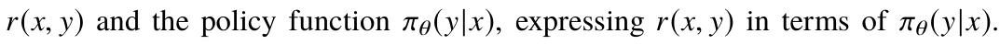
Next, it establishes a direct connection between the training objective and the policy function πθ(y|x). through reward modeling approaches (e.g., Eq. 8.2). This allows LLMs to achieve human alignment in a way functionally equivalent to reinforcement learning.
Recall that the PPO algorithm incorporates KL divergence as a regularization term (i.e., Eq. 8.21). For the sake of simplicity in the derivation presented here, importance sampling is temporarily not considered, and the optimization objective is reformulated as follows:
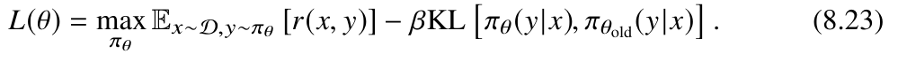
Next, we will derive the optimal solution of the objective function in Eq. 8.23. Since it is very difficult to find the optimal solution through direct differentiation, we first expand the KL function in the original expression and simplify the equation. The detailed derivation is as follows:
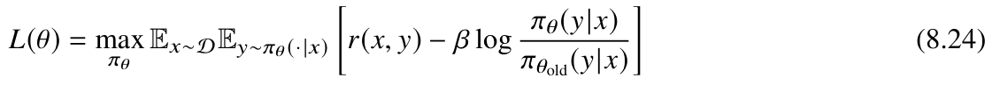
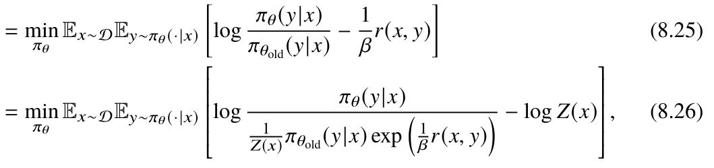
⎡⎢⎢⎢⎢⎢⎣
⎤⎥⎥⎥⎥⎥⎦
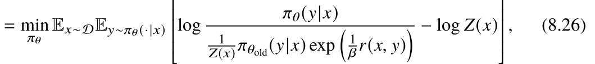
where πθ(y|x). in Eq. 8.26 represents the policy function, i.e., the probability function of the policy model πθ . generating output text y based on the current input x. Z(x). is a partition function and is defined as follows:
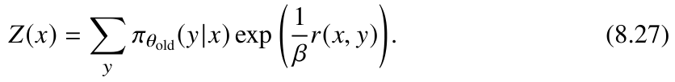
1The phrase “policy function” is used here to emphasize the mapping relationship between the input and the corresponding probability distribution of various outputs generated by the policy model.
From the above expression, it can be seen that the partition function Z(x). mainly depends on the input x and the reference model’s policy function πθold(y|x)., and does not depend on the policy function πθ(y|x). being trained. To facilitate the derivation, a special function π∗(y|x). is introduced to simplify the above representation:
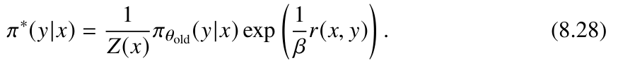
It can be proved that Eq. 8.28 satisfies the following two properties: (1) π∗(y|x) > 0.; (2)
y π∗(y|x) = 1. Therefore, π∗(·|x). is also a probability distribution and is independent of the current policy function πθ(y|x). Next, we substitute π∗(y|x). into Eq. 8.26 and continue with the derivation and simplification:
⎡⎢⎢⎢⎢⎢⎣
⎤⎥⎥⎥⎥⎥⎦
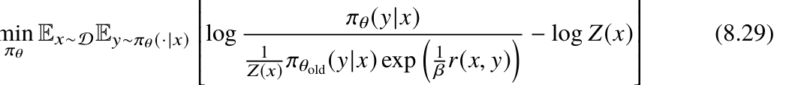
. min
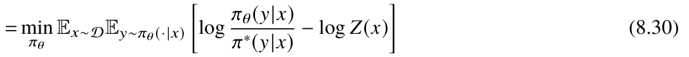
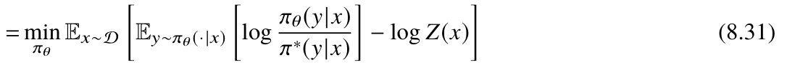
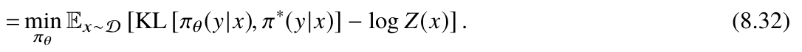
In the above derivation, since the value of Z(x). is independent of πθ ., the optimal
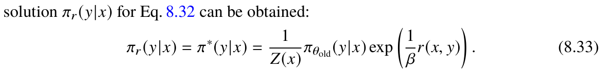
Next, we attempt to express the reward function r(x, y). using πr (y|x)., πθold(y|x)., and Z(x)., thereby establishing the relationship between the policy function and the reward function. To achieve this goal, we take the logarithm of both sides of Eq. 8.33 and then rearrange the terms to derive an estimate of the reward. The detailed derivation process is as follows:
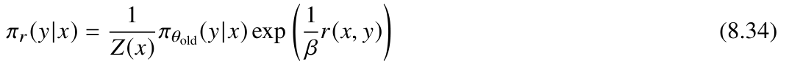
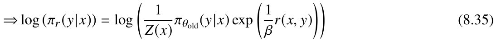
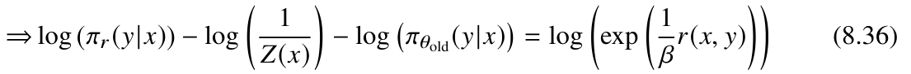
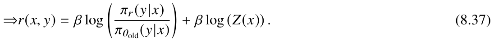
To define the optimization loss function for DPO, we rewrite the original reward model-based loss (such as the contrast loss in Eq. 8.2) to facilitate subsequent derivation, as follows:
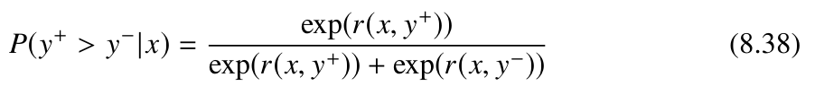
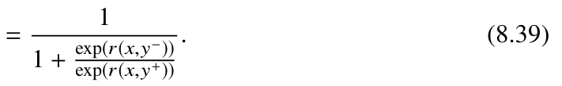
Furthermore, by substituting the previously derived reward estimate (i.e., Eq. 8.37) into the simplified reward modeling formula (i.e., Eq. 8.39), we obtain:
Since the partition function Z(x). appears in both the numerator and denominator, it will cancel out and does not need to be modeled. By modeling human preference data, the final optimization objective function can be written as follows:
Analysis of the DPO Algorithm
Furthermore, the objective function in the DPO algorithm (i.e., Eq. 8.43) can be differentiated. By analyzing the derivative of the objective function, we can gain a
deeper understanding of the working principle of the DPO algorithm.
., then the derivative of Eq. 8.43 can be simplified to the following form:
Based on the properties of the sigmoid function, we have ∇σ(u) = σ(u)(1 - σ(u)) =
In this case, we can further derive Eq. 8.44:
.
In practice, DPO applies gradient descent to optimize the parameters θ. of the policy model. Analysis of the derivative of the objective function shows that this optimization process increases the difference between log πθ(y+|x). and log πθ(y-|x). This encourages the model to assign higher generative probabilities to content aligned with human preferences (y+.) and to reduce the likelihood of generating content misaligned with these preferences (y-.). The first term in Eq. 8.45, σ(ˆrθ(x, y-) - ˆrθ(x, y+))., acts as a gradient coefficient that dynamically regulates the size of the gradient descent step. When the policy model exhibits a stronger tendency to generate content misaligned with human preferences (y-.), the disparity between ˆrθ(x, y-). and ˆrθ(x, y+). enlarges, resulting in a larger gradient descent step. This, in turn, produces a more substantial parameter update to reduce the likelihood of generating y-. Conversely, when the policy model favors generating content aligned with human preferences (y+.), it suggests that the model parameters are well-optimized. In this case, the gradient coefficient σ(ˆrθ(x, y-) - ˆrθ(x, y+)). diminishes, leading to a reduction in the magnitude of parameter updates. This moderation prevents excessively large adjustments that could destabilize the model, thereby enhancing the stability of the training process.
Code Practice for DPO
To help readers better understand how to use the DPO algorithm, we provide an example DPO code implemented using LLMBox. In this code, the training process utilizes the TRL code library from Hugging Face.2 The TRL library offers a variety of methods for training LLMs, including instruction tuning, reward model training, and alignment fine-tuning. The DPOTrainer encompasses functions such as tokenizing training data, computing the DPO loss function, and optimizing model parameters. Users need only to properly load the model and format the dataset correctly to begin training. The dataset 2https://github.com/huggingface/trl.
from dataclasses import dataclass
from datasets import load_dataset
from transformers import AutoModelForCausalLM, AutoTokenizer,
HfArgumentParser, TrainingArgumentsfrom transformers.hf_argparser import HfArg
from trl import DPOTrainer
@dataclass
class Arguments(TrainingArguments):
# Model structure
model_name_or_path: str = HfArg(
default=None,
help="The model name or path, e.g., `yulan-team/YuLan-Chat-12B-v3`", )
# DPO training dataset
data_path: str = HfArg(
default=None,
help="The path of preference dataset, e.g., `Anthropic/hh-rlhf`",
)
# Context window size
model_max_length: int = HfArg(default=512, help="Maximum sequence
length.") # Use BF16 mixed precision training
bf16: bool = HfArg(
default=True,
help="Whether to use bf16 (mixed) precision instead of 32-bit.",
)
# Hyperparameter beta used in DPO
beta: float = HfArg(
default=0.1,
help="The beta factor in DPO loss."
"Higher beta means less divergence from the initial policy.",
)
# Load the training dataset and process it into the corresponding format
def get_data(split, data_path):
dataset = load_dataset(split=split, path=data_path)
def split_prompt_and_responses_hh(sample):
search_term = "\n\nAssistant:"
search_term_idx = sample["chosen"].rfind(search_term)
assert search_term_idx != -1, f"Prompt and response does not contain '{search_term}'"prompt = sample["chosen"][:search_term_idx + len(search_term)]
return {should contain three key fields: “prompt,” “chosen,” and “rejected,” which represent the input data, outputs aligned with human preferences, and outputs not aligned with human preferences, respectively. The dataset required for DPO training can be constructed using the Dataset class from the Datasets library. During implementation, it needs to load the policy model πθ . and the reference model πθold . Initially, the policy model and the reference model can be instantiated from the same model checkpoint. → → →
"prompt": prompt,
"chosen": sample["chosen"][len(prompt):],
"rejected": sample["rejected"][len(prompt):],
}
return dataset.map(split_prompt_and_responses_hh)
def train():
# Parse command line arguments
parser = HfArgumentParser(Arguments)
args = parser.parse_args_into_dataclasses()[0]
# Load the policy model
model = AutoModelForCausalLM.from_pretrained(args.model_name_or_path)
# Load the reference model
model_ref =
AutoModelForCausalLM.from_pretrained(args.model_name_or_path) model_ref.eval()
for param in model_ref.parameters():
param.requires_grad = False
# Load the tokenizer
tokenizer = AutoTokenizer.from_pretrained(
args.model_name_or_path,
model_max_length=args.model_max_length,
padding_side="right",
add_eos_token=True,
)
# Prepare training data
train_dataset = get_data("train", args.data_path)
# Initialize the trainer and start training
kwargs = dict(
model=model,
ref_model=model_ref,
args=args,
tokenizer=tokenizer,
train_dataset=train_dataset,
)
dpo_trainer = DPOTrainer(**kwargs)
dpo_trainer.train()
dpo_trainer.save_state()
if __name__ == "__main__":
train()→ The preceding section explains the basic principles and implementation of the DPO algorithm. Unlike the RLHF algorithm, DPO does not use reinforcement learning to train a reward model. Instead, it trains the language model using supervised alignment methods in a contrastive manner. In contrast to traditional supervised fine-tuning, DPO not only encourages the model to generate content aligned with human preferences but also reduces the likelihood of generating misaligned content. Compared to the PPO algorithm, DPO
requires only the policy model and reference model during training, eliminating the need for reward model and critic model. As a result, DPO is more resource-efficient and operates faster, making it highly practical for widespread use.
8.3.2Other Supervised Alignment Algorithms#
Apart from the DPO algorithm, various supervised alignment algorithms have also been introduced in the academic community. These algorithms primarily leverage alignment data to optimize LLMs using traditional text generation objectives (such as cross-entropy loss) while incorporating auxiliary objectives to enhance the effectiveness of learning from alignment data. Formally, within alignment data, assuming each input x corresponds to a positive output example y+. and a negative output example y-., the optimization objective of the supervised alignment algorithm can be expressed in the following general form:
auxiliary training target
primary training target
where y+
t . denotes the t.-th token in the positive example y+., and y+
<t. represents the preceding t - 1. tokens in y+. The primary training objective is to minimize the cross-entropy loss for generating the positive output y+. based on the input x. In addition to the primary objective, supervised alignment algorithms commonly introduce auxiliary objectives to help the model better distinguish between positive and negative examples during fine-tuning. Positive and negative examples can be obtained either through ranking with a reward model or via human annotation. Two widely used auxiliary objectives are detailed below.
Training Objective Based on Quality-Indicative Prompts
The first approach employs prompt techniques to aid the model in differentiating between positive and negative examples. Specifically, prefixes can be added to label the examples clearly. For instance, prefixes like “Good response:” and “Bad response:” can be added before the positive output y+. and negative output y-., respectively. The language model is then trained to generate the appropriate output based on the input prompt and the prefixed input prompt. In alignment data, each input may have multiple
outputs, often annotated with scores or rankings. To indicate output quality, a reward marker can be added before each model output to specify its alignment level, such as “Response with 5-star reward:” or “Second-ranked response:.” This approach helps the model better understand what constitutes a high-quality response, optimizing its outputs during training accordingly.
Training Objective Based on Quality Contrast
This method aims to leverage the partial ordering of output quality, encouraging the model to generate high-quality responses with higher probability while avoiding lower-quality content. During training, multiple positive and negative example pairs (x, y+, y-). are sampled from the outputs for each input x. The model then applies either a contrast-based training method (Eq. 8.2) or a ranking-based training method (Eq. 8.3) similar to that used in RLHF, enabling it to distinguish between high- and low-quality outputs. Additionally, to reinforce the connection between inputs and their corresponding outputs, contrastive examples can be incorporated into the training process. In this approach, the objective of contrastive learning is to maximize the probability of generating the positive output y+. (the highest-scoring or top-ranked output) for the given input x., while minimizing the probability of generating y+. for other inputs ˜x. where x
This
˜x. method helps prevent the model from generating similar responses for disparate inputs, thereby mitigating potential limitations or safety concerns. Unlike RLHF, this contrastive learning process relies entirely on supervised learning objectives, simplifying the overall optimization process.
8.4Further Discussion on SFT and RLHF#
In the literature of LLMs, instruction tuning (discussed in Chap. 7) and supervised fine-tuning (SFT) generally refer to the same technique, which trains LLMs on instruction-formatted data. To align with terminology commonly used in academic studies, this section will use the term “supervised fine-tuning” instead of “instruction tuning.” In the development of InstructGPT, researchers employed SFT as the initial step in the RLHF algorithm [17]. To elucidate the significance and characteristics of these two techniques, this section treats SFT and RLHF as two distinct methods for training large models and
1. Improve the capacities of LLMs in various downstream tasks
2. Enhance the generalization ability of LLMs across different
Advantages
tasks and scenarios
3. Enhance the capability of language models in professional
fields or for specific purposes
SFT
1. Likely to encounter training issues such as suboptimal results
or exposure biases due to the essence of behavior clone
2. Be prone to hallucinations when the instruction data exceeds
Disadvantages
the language model’s knowledge scope
3. Be difficult to create or generate high-quality instruction data
due to the limited capacities of humans or models
1. Further enhance the model’s capabilities and improve its
helpfulness
2. Can be employed to effectively rectify the problematic
Advantages
behaviors of LLMs
3. Preference annotation is simpler than example creation, RLHF
which helps to reduce inconsistencies in annotation
1. Have a low sample efficiency during training
2. Suffer from unstable training process and be sensitive to
Disadvantages
hyperparameters
3. Depend on a strong model checkpoint for warm start
discusses their relationships and differences in detail. Table 8.1 provides a comparative summary of the advantages and disadvantages of these methods, offering readers a clearer perspective on their strengths and weaknesses.
8.4.1Comparison Based on Learning Methods#
As discussed in Sect. 8.2, text generation can be framed as a decision-making process. Specifically, when given an instruction as input, a language model aims to produce text that fulfills the task instruction. This process is divided into a sequence of token-by-token generation steps. At each step, the policy model (i.e., the language model itself) selects the next action (i.e., generating the next token) based on the current state, which consists of the sequence of tokens generated so far and the available context. The overall objective is to optimize the language model’s generative capacity to enhance output quality and achieve higher reward scores.
Specifically, RLHF and SFT represent two distinct training methods for optimizing the text generation process in language models. The RLHF algorithm first trains a reward model, followed by using reinforcement learning algorithms (such as PPO) to improve the model based on the reward model. In contrast, SFT primarily uses a teacher-forcing approach, directly optimizing the model’s prediction probabilities for the desired outputs. The token-level training approach in SFT is essentially a form of “behavior cloning” (a specific imitation learning algorithm, see reference [222]). In SFT, the model uses the teacher’s behavior (i.e., target tokens at each step) as supervision labels, directly training the language model to imitate this behavior.
In summary, SFT relies on sequence-to-sequence supervised learning methods, focusing on optimizing token-level generation loss. In contrast, RLHF primarily aligns the model with human values through reinforcement learning, optimizing for text-level alignment loss. The following subsections provide a detailed discussion of the advantages and disadvantages of each method.
8.4.2Advantages and Disadvantages of SFT#
For LLMs, SFT has proven to be an essential method for adapting to specific domains or tasks, effectively enhancing performance on various benchmarks and improving task generalization. This approach is easy to implement, flexible, and highly scalable, making it particularly effective for enabling specialized functionalities, such as defining roles and identities for the chatbots’ personas. For a more detailed discussion on the impacts of SFT, refer to Sect. 7.1.5.
According to current academic literature, SFT primarily serves to “unlock” intrinsic capabilities within LLMs rather than “injecting” new abilities. Consequently, using SFT to elicit non-intrinsic capabilities may lead to negative effects. For example, when instruction data extends beyond the model’s knowledge scope, such as training the model to answer questions about unknown facts, this approach can exacerbate hallucinatory behaviors. John Schulman, cofounder of OpenAI and the first author of the PPO algorithm paper, highlighted an important point in a lecture on RLHF: distilling a larger model to train a smaller one may increase the likelihood of generating hallucinated text, thus impacting the factual accuracy of language models [223]. Currently, both academia and industry
extensively use powerful close-source models (e.g., GPT-4) to synthesize instruction data. In this process, it is crucial not only to ensure the quality of the instruction data itself but also to consider the model’s inherent knowledge and capability limits to mitigate negative effects during fine-tuning, such as hallucination.
As a behavior cloning-based approach, SFT primarily focuses on replicating the annotated data provided by human instructors, which limits its ability to engage in exploratory learning. Variations in annotators’ writing styles, creativity, and topic preferences can introduce inconsistencies in the data, potentially affecting SFT performance. Therefore, during the SFT phase, the quality of the instruction data is a crucial determinant of the training effectiveness for LLMs.
8.4.3Advantages and Disadvantages of RLHF#
RLHF was first introduced in the deep reinforcement learning literature [41] and then adapted to improve language models. OpenAI initially applied RLHF to generate text summaries aligned with human preferences [43] and later used this approach to develop the InstructGPT model [17]. Early research primarily explored how RLHF could improve the alignment of models with human preferences and reduce the generation of harmful content.
Recent studies show that RLHF not only reduces harmful content but also effectively enhances model performance. This was extensively discussed in the LLaMA-2 paper [47], which demonstrated that RLHF can simultaneously improve both helpfulness and safety scores in LLaMA-2. The paper highlights two potential advantages of RLHF over SFT. First, in RLHF, annotators provide preference based feedback rather than generating example data directly, reducing inconsistencies among annotators. Second, preference annotation is simpler and more practical than creating example data, allowing annotators to assess content that may be beyond their creative abilities. Thus, RLHF enables the model to explore states beyond those predefined by instructor’s examples. These advantages make RLHF superior to SFT, particularly during the data annotation process, as it leverages human guidance in a more robust and effective manner.
During the model training phase, RLHF guides the model to learn effective generation strategies by distinguishing between “good” and “bad” responses rather than merely replicating teacher-provided examples. This approach helps mitigate the hallucination issues associated with SFT. Indeed, RLHF has been shown to effectively reduce hallucinations in models like GPT-4 [24]. The reward model plays a vital role in RLHF methodologies, requiring a keen understanding of the knowledge and capability scope of the language model being improved. For example, in LLaMA-2, the same checkpoint was used to initialize both the language model and the reward model.
However, RLHF inherits certain drawbacks from traditional reinforcement learning algorithms, such as low sample efficiency and training instability. Therefore, when training language models, RLHF typically starts with models trained via SFT to establish a robust initial policy. This explains why InstructGPT uses SFT as the first step in its RLHF process. Additionally, RLHF generally involves multiple rounds of iterative optimization—an intricate process involving careful management of factors such as prompt selection, reward model training, and hyperparameter settings. These details are crucial to achieving optimal model performance but also pose significant challenges in implementation.
Overall, SFT is well-suited for improving model performance after pre-training, offering benefits like simplicity and efficiency. In contrast, RLHF can build on this foundation to further reduce harmful behaviors and enhance model performance, though it entails more complex implementation and optimization. Future research should investigate alignment methods that combine the strengths of both SFT and RLHF. As models advance in capability, it will also be essential to develop effective alignment strategies for strong models. In response to this challenge, OpenAI had introduced the concept of “superalignment,” a research initiative focused on effectively regulating superintelligent AI systems.
8.5Hallucination#
A common technical challenge in aligning language models with human values is the issue of hallucination, where the model generates factually incorrect information, compromising the integrity of alignment toward honesty. This section will introduce the
definition and classification of hallucination (Sect. 8.5.1), examine its causes (Sect. 8.5.2), discuss detection methods (Sect. 8.5.3), and review strategies for mitigation (Sect. 8.5.4). Addressing hallucination typically involves a multi-faceted approach that extends beyond alignment-specific techniques like RLHF to include strategies during both training and decoding.
8.5.1Definition and Classification of Hallucination#
In NLP, early research [224] categorized hallucinations into intrinsic hallucinations (text inconsistent with the input) and extrinsic hallucinations (text unverifiable by the input), based primarily on the given input content. However, in practical applications, LLMs often respond to open-domain questions without reference documents in their inputs. As a result, recent research has shifted focus to open-domain factual hallucinations, where generated content either contradicts or cannot be verified against established world knowledge [225, 226]. Below, we further classify factual hallucinations [226], with specific examples provided in Table 8.2.
- Entity-error hallucination. This type of hallucination refers to errors in the generated text where entities such as people, dates, locations, or objects contradict world knowledge. For example, when asked “In which year was the Nanjing Yangtze River Bridge completed?,” the model might generate the incorrect year 1970, which conflicts with the actual year 1968.
- Relation-error hallucination. This type of hallucination refers to errors in the generated content regarding the relationships between entities, such as incorrect numerical or temporal relationships. For example, the model might generate statements like “The nitrogen content in seawater is higher than the chlorine content” (an incorrect numerical relationship) or “Bill Gates was born later than Mark Zuckerberg” (an incorrect temporal relationship), both of which falsely represent the relationships between the respective entities.
- Incompleteness hallucination. This type of hallucination occurs when the generated content omits crucial factual information, especially in cases involving comprehensive details such as lists. For example, when asked “What are the four great inventions of ancient China?”, the model might respond, “The four great inventions of ancient China include papermaking, printing, and the compass”, omitting “gunpowder” and thereby rendering the response factually incomplete.
- Outdatedness hallucination. This type of hallucination refers to information generated by the model that was correct at some point in the past but is no longer accurate now. This often occurs because many models are trained on datasets that only extend up to a certain year. For example, when asked “Who is the CEO of Microsoft” a model trained on data prior to 2021 might incorrectly respond “Bill Gates,” rather than “Satya Nadella,” who is the current CEO.
- Overclaim hallucination. This type of hallucination occurs when the model generates text that exaggerates factual knowledge, resulting in incorrect assertions about related knowledge [227]. For example, the model might generate an overgeneralized statement like “Vitamin C can cure all types of colds.”
- Unverifiability hallucination. This type of hallucination occurs when the text generated by the model includes information that cannot be verified through existing sources. For example, the model might fabricate names of books that sound plausible but, in reality, do not exist.
8.5.2Causes of Hallucination#
The causes of hallucinations produced by language models are multifaceted. Below, we will discuss reasons related to training data, training methods, and decoding methods. Training Data
In the pre-training phase, large-scale text data provides the foundation for the model to acquire world knowledge and develop general capabilities. Subsequently, during instruction tuning, high-quality instruction data is crucial for enhancing the model’s ability to follow human instructions accurately. Thus, the quality of the training data significantly influences model outputs and is a key factor contributing to the occurrence of hallucinations.
- Data quality. During pre-training, developers commonly compile data from diverse sources. Although increasing the scale of pre-training data generally boosts model performance, low-quality data can compromise the model’s generative capabilities. Pre-training data may contain errors, and language models are inherently designed to closely mimic and memorize this data. When inaccuracies are frequent, the model might internalize and reproduce them in its outputs, leading to hallucinations—a situation commonly referred to as “imitation trap” [228]. Furthermore, pre-training data may contain biased content and subjective views from its compilers, potentially skewing the model’s understanding of world knowledge and resulting in inappropriate outputs.
- Data distribution. The distribution of pre-training data also influences the outputs generated by language models. Firstly, these models are trained using datasets confined to particular time periods. As a result, as global knowledge evolves, the information stored within the model may become outdated. If queried about recent events or developments beyond its training scope, it can produce responses that are either outdated or incorrect. Regarding data composition, pre-training datasets may be deficient in information from specific specialized domains, thereby affecting the model’s performance in those areas. For questions requiring domain-specific knowledge (e.g., medical or legal), the model is more prone to hallucinations. Additionally, pre-training data often contains sparse long-tail knowledge that appears infrequently in the dataset. Research [226] has shown that the model is more likely to produce inaccurate information when answering questions related to long-tail knowledge. Training Methods LLMs typically undergo two primary stages of learning: pre-training and post-training. These two stages are vital for developing and enhancing the model’s functionalities. However, inadequate training approaches can intensify the occurrence of hallucinations within the model.
- Pre-training. The pre-training phase primarily utilizes the next token prediction approach. However, in auto-regressive training, the model’s attention distribution tends to diminish as the sequence length increases, which hinders its ability to capture long-range dependencies effectively. This deficiency may lead to reasoning errors or hallucinations [229]. Moreover, during model training, the teacher-forcing strategy is often employed, in which the correct answer is provided to predict the next token instead of relying on the model’s previous outputs. While this method accelerates convergence, it leads to a divergence in behavior when the model is required to rely on its own generated content for subsequent predictions in real-world applications. This discrepancy between training and generation phases introduces “exposure bias” [230], potentially leading to further hallucinations.
- Post-training. Post-training typically include instruction tuning and human alignment. During instruction tuning, high-quality instruction data can significantly improve a model’s ability to follow instructions and complete complex tasks. To enhance instruction-following capabilities, current methods often use knowledge distillation, in which a stronger model (e.g., GPT-4) produces synthetic instruction data to fine-tune a less capable model. However, if the instruction data surpasses the model’s inherent capabilities and knowledge, the risk of generating hallucinated content increases. In the human alignment process, certain training methods may also contribute to hallucination. Research has shown that models may intentionally provide responses that cater to human preferences to gain higher rewards, even if those responses are not factually accurate [231]. Decoding Strategies In real-world applications, language models generate outputs based on input prompts through a decoding process (Sect. 9.1). During this process, the choice of prompting methods or decoding strategies can also influence the model to produce hallucinated content.
- Prompt design. Prompting techniques are a primary approach for leveraging language models to solve downstream tasks. However, inappropriate prompts can hinder the model’s ability to accurately process essential information from the inputs, leading to content that does not align with user instructions or contains errors [226]. Research shows that the readability, formality, and specificity of user instructions can all impact the model’s output [232]. For instance, complex or lengthy phrasing in instructions can reduce readability, making it harder for the model to comprehend and potentially leading to hallucinations. Additionally, non-standard expressions or abstract concepts, instead of concrete terms, may increase the likelihood of hallucinations in the model’s responses.
- Sampling method. During decoding, text generated through greedy decoding often found to be suboptimal, so some level of randomness (e.g., random sampling) is typically introduced to produce more creative and diverse text. However, increasing diversity also raises the risk of generating hallucinated content. Specifically, increasing the temperature parameter in the sampling algorithm (t. in Eq. 9.3) results in a more uniform distribution of token probabilities, thereby increasing the likelihood of selecting low-frequency words, which can, in turn, lead to more hallucinations.
8.5.3Methods for Hallucination Detection#
Hallucination detection aims to accurately identify hallucinated content in the outputs of language models and plays an important role in enhancing the reliability of generated content. Existing hallucination detection methods can be broadly categorized into three types: model capability based methods, uncertainty based methods, and external tool based methods.
- Prompting based methods. Given the proficient language abilities and extensive world knowledge of LLMs, more capable language models (such as GPT-4) can be employed to detect hallucinated content in the outputs of less capable models. Typically, prompting methods, such as chain-of-thought reasoning or in-context learning, can guide the model to identify hallucinations in the text [124]. However, since the content to be evaluated often consists of complex sentences with multiple factual statements, direct prompting may not reliably detect fine-grained hallucinated contents. To improve detection accuracy, the text can be segmented into sentences or short paragraphs, each of which can then be verified separately [226, 233]. Nonetheless, detection methods based on model capabilities are limited by the model’s inherent knowledge and may fail to identify hallucinations in content that surpasses the model’s expertise.
- Uncertainty based methods. Research [234] suggests that hallucinations in language models may stem from uncertainty in model outputs. Therefore, hallucinations can be detected by evaluating this uncertainty, utilizing qualitative indicators like token generation probabilities and intermediate hidden representations. For key concepts in the generated text, lower token probabilities imply higher uncertainty, potentially increasing the likelihood of hallucinations [235]. In scenarios where models are accessed solely via an API and internal states are not available, hallucinations are mainly detected by evaluating the consistency of the model’s outputs. Practically, the model can be prompted to answer the same question multiple times, and the consistency of the responses can then be assessed [236]. Alternatively, the model can be asked to reconstruct the input question based on its response, and the reconstructed question can then be compared to the original to assess consistency [237].
- External tool based methods. LLMs can leverage external tools (e.g., search engines), to access reference information and compare it against generated content to detect hallucinations. Given that model outputs often contain multiple factual statements, we can segment them into fine-grained components, each subsequently verified for accuracy using a search engine [238]. Building on this method, a comprehensive hallucination detection framework can be developed using external tools [239]. This framework would integrate a variety of verification resources, such as calculators and code interpreters, to evaluate different types of text. Such tool-assisted detection methods effectively mitigate the limitations related to the model’s internal knowledge and capabilities.
8.5.4Methods for Hallucination Mitigation#
In practical applications, specific techniques need to be applied to mitigate hallucination behaviors in language models. This subsection introduces four commonly used methods for hallucination mitigation.
- Alignment training. Eliminating hallucinations is closely tied to the “honesty” criterion in the “3H” criteria for human alignment, so that RLHF can be readily applied to address hallucination issues in language models [24]. The efficacy of this method hinges on the creation of parallel datasets that distinguish between hallucinated and non-hallucinated responses for model training. In practice, researchers often use capable LLMs (e.g., GPT-4) as instructor model to generate alignment data. Initially, user instructions are fed into an unaligned model to produce outputs. Subsequently, the instructor model assesses these outputs to determine the presence of hallucinations. If identified, it iteratively refines the responses until they are devoid of hallucinations, or until the preset maximum iteration count is reached. The compiled data of user instruction, response with hallucinations, response without hallucinations are then used to train a reward model, which aims to align the model’s outputs to minimize hallucinations.
- Retrieval-augmented generation. To improve the accuracy of language model outputs, retrieval-augmented generation (RAG) can be employed to facilitate the generation of more accurate content. In implementation, RAG typically adopts a “retrieve-then-generate” workflow. Initially, a retrieval module collects relevant information from external knowledge sources and integrates it into the model’s input. Subsequently, the model generates responses that are informed by both the user instructions and the supplemented information. Considering that the retrieved knowledge might sometimes conflict with the model’s inherent knowledge, it is essential to meticulously filter the retrieved documents to remove irrelevant data and extract key information, thereby enhancing the accuracy of the outputs. For further details on RAG, refer to Sect. 10.4.
- Advanced decoding strategies. Due to inherent randomness in the decoding process, models may occasionally generate factually incorrect content. Advanced decoding strategies can effectively balance factual accuracy with content diversity. An example is the widely-used top-p decoding algorithm (refer to Sect. 9.1), where the hyperparameter p is pivotal to set. At the beginning of generating a new sentence, contextual cues are sparse, a higher p value can introduce greater randomness; as the sentence length grows and the context becomes clearer, gradually reducing p can enhance factual accuracy. Furthermore, a decay mechanism can dynamically adjust p during generation, maintaining a minimum threshold to preserve a degree of diversity.
- Improved prompt design. Another effective strategy to reduce hallucinations involves refining the prompt design for language models. Research indicates [226] that incorporating specific domain information into the task description or tailoring the model’s role to fit the task requirements (e.g., specifying the model as a programmer for code generation tasks) can effectively mitigate hallucinations during generation. Crafting prompts that encourage the model to reflect on its own outputs can further assist in identifying and correcting hallucinations.
Model response
Type
Problem
In which year was the
The Nanjing Yangtze River Bridge was
Nanjing Yangtze River
opened to traffic in 1970.
Bridge built?
Entity error
Who is the author of
The author of “Romance of the Three
“Romance of the Three
Kingdoms” is Wu Cheng’en.
Kingdoms”?
Did Magellan’s
Yes, Columbus’s discovery of America
circumnavigation
happened later than Magellan’s
precede Columbus’s
circumnavigation.
discovery of America?
Relation error
In seawater, is the
content of nitrogen
The content of nitrogen in seawater is higher
higher or is the content
than that of chlorine.
of chlorine higher?
The four great inventions of ancient China
What are the four great
have had a profound impact on the
inventions of ancient
development of world civilization, they
China?
include papermaking, printing, and the
compass.
Incompleteness
1.“Quiet Night Thoughts”; 2.“Bring in the
Please list four poems
Wine”; 3.“Seeing off Meng Haoran for
created by Li Bai.
Guangling at Yellow Crane Tower”.
Who is the CEO of
The current CEO of Microsoft Corporation is
Microsoft Corporation?
Bill Gates.
Outdatedness
What is the latest model
The latest model of Apple’s mobile phone is
of Apple’s mobile
the iPhone 14 series.
phone?
Vitamin C can cure all types of colds,it helps
Can Vitamin C cure a
prevent colds and shorten the duration of cold
cold?
symptoms.
Overclaim
Climate change is entirely caused by natural
Is climate change a
factors, human activities have no impact
natural phenomenon?
whatsoever.
I recommend the novel “Ripples of Time”, a
Can you recommend a
science fiction novel created by Emily
science fiction novel?
Grayson, which describes the parallel time
ripple effect in time travel.
Unverifiability
What was the most
In the Middle Ages, the favorite game of
popular children’s game
European children was a game called
in medieval Europe?
Notes
- 26 26
- 73 73
- 44 44